CODING AGENTS AS PIXEL WORLD MODELS
traex/DeepSeek-V4.1-Flash · dynamic_spatial_relationship_0027
点击播放 · 原生 RGB 像素
逐轮保存的候选
回放视频、检查图与代码变化。
每份候选均可单独播放。实际图片检查记录在下方工具轨迹中。
候选 01播放与检查图
点击播放 · 原生 RGB 像素

展开代码变化
--- 上一保存版本
+++ 本次保存版本
@@ -0,0 +1,356 @@
+from pathlib import Path
+import math
+
+import numpy as np
+from PIL import Image, ImageDraw, ImageFilter
+
+import artifact_io
+
+
+CASE_DIR = Path(__file__).resolve().parent
+WIDTH, HEIGHT = 256, 144
+FRAMES, FPS = 20, 4.0
+SS = 4
+
+
+def sc(value):
+ return int(round(value * SS))
+
+
+def color(hex_value, alpha=255):
+ value = hex_value.lstrip("#")
+ return tuple(int(value[i:i + 2], 16) for i in (0, 2, 4)) + (alpha,)
+
+
+def smoothstep(a, b, value):
+ t = max(0.0, min(1.0, (value - a) / (b - a)))
+ return t * t * (3.0 - 2.0 * t)
+
+
+def mix(c1, c2, t):
+ return tuple(int(round(a * (1.0 - t) + b * t)) for a, b in zip(c1, c2))
+
+
+def rounded_polygon(draw, points, fill, outline=None, width=1):
+ draw.polygon([(sc(x), sc(y)) for x, y in points], fill=fill)
+ if outline is not None:
+ pts = [(sc(x), sc(y)) for x, y in points]
+ draw.line(pts + [pts[0]], fill=outline, width=max(1, sc(width)), joint="curve")
+
+
+def ellipse(draw, box, fill, outline=None, width=1):
+ draw.ellipse(tuple(sc(v) for v in box), fill=fill, outline=outline,
+ width=max(1, sc(width)))
+
+
+def line(draw, points, fill, width=1):
+ draw.line([(sc(x), sc(y)) for x, y in points], fill=fill,
+ width=max(1, sc(width)), joint="curve")
+
+
+def make_background():
+ img = Image.new("RGB", (WIDTH * SS, HEIGHT * SS), color("#cce8dc"))
+ px = np.zeros((HEIGHT, WIDTH, 3), dtype=np.float32)
+
+ for y in range(HEIGHT):
+ if y < 74:
+ t = y / 73.0
+ top = np.array([170, 217, 211], dtype=np.float32)
+ bottom = np.array([224, 235, 201], dtype=np.float32)
+ row = top * (1.0 - t) + bottom * t
+ else:
+ t = (y - 74.0) / 69.0
+ top = np.array([158, 178, 111], dtype=np.float32)
+ bottom = np.array([92, 120, 69], dtype=np.float32)
+ row = top * (1.0 - t) + bottom * t
+ px[y, :, :] = row
+
+ rng = np.random.default_rng(27)
+ fine = rng.normal(0.0, 2.4, (HEIGHT, WIDTH, 1))
+ broad = rng.normal(0.0, 3.2, (max(1, HEIGHT // 6), max(1, WIDTH // 6), 1))
+ broad = np.asarray(Image.fromarray(
+ np.clip(broad[..., 0] + 128, 0, 255).astype(np.uint8)
+ ).resize((WIDTH, HEIGHT), Image.Resampling.BILINEAR), dtype=np.float32)
+ broad = (broad - 128.0)[..., None]
+ ground_mask = np.linspace(0.0, 1.0, HEIGHT)[:, None, None]
+ px += fine * (0.35 + 0.65 * ground_mask) + broad * (0.2 + 0.8 * ground_mask)
+ img = Image.fromarray(np.clip(px, 0, 255).astype(np.uint8)).resize(
+ (WIDTH * SS, HEIGHT * SS), Image.Resampling.BICUBIC
+ )
+ draw = ImageDraw.Draw(img, "RGBA")
+
+ # Pale morning light and soft cloud banks.
+ sun = Image.new("RGBA", img.size, (0, 0, 0, 0))
+ sd = ImageDraw.Draw(sun)
+ sd.ellipse((sc(179), sc(4), sc(259), sc(84)), fill=(255, 244, 190, 70))
+ sd.ellipse((sc(199), sc(12), sc(247), sc(60)), fill=(255, 249, 211, 90))
+ sun = sun.filter(ImageFilter.GaussianBlur(sc(8)))
+ img.alpha_composite(sun) if img.mode == "RGBA" else img.paste(
+ Image.alpha_composite(img.convert("RGBA"), sun).convert("RGB"), (0, 0)
+ )
+ draw = ImageDraw.Draw(img, "RGBA")
+
+ for cx, cy, rx, ry, alpha in [
+ (44, 28, 31, 8, 56), (75, 36, 22, 6, 38),
+ (154, 24, 25, 6, 44), (207, 43, 28, 6, 30),
+ ]:
+ ellipse(draw, (cx - rx, cy - ry, cx + rx, cy + ry), (248, 251, 231, alpha))
+
+ # Layered distant forest.
+ far = [
+ (-8, 74), (9, 58), (21, 74), (34, 51), (51, 74), (65, 57),
+ (80, 74), (99, 49), (115, 74), (132, 56), (148, 74),
+ (165, 50), (184, 74), (203, 57), (221, 74), (241, 48), (264, 74),
+ ]
+ rounded_polygon(draw, far + [(264, 82), (-8, 82)], color("#75947a"))
+ near_hills = [(-10, 75), (12, 66), (30, 73), (53, 64), (72, 73),
+ (93, 63), (116, 72), (143, 64), (171, 73), (196, 65),
+ (221, 72), (244, 62), (267, 72), (267, 86), (-10, 86)]
+ rounded_polygon(draw, near_hills, color("#557c61"))
+
+ # Tree trunks and leaf clusters frame the action without competing with it.
+ for x, width, shade in [(10, 8, "#4c5740"), (241, 9, "#4a583f")]:
+ line(draw, [(x + 2, 80), (x - 1, 8)], color(shade), width)
+ line(draw, [(x - width / 2, 10), (x + width / 2, 10)],
+ color("#394638"), max(2, width // 2))
+ for yy in (13, 24, 35):
+ line(draw, [(x, yy), (x + (11 if x < 128 else -11), yy - 3)],
+ color(shade), 2)
+ leaf_centers = [(8, 12, 24, 11), (23, 7, 19, 9), (243, 10, 26, 12),
+ (229, 20, 20, 8), (15, 43, 13, 6), (242, 43, 15, 6)]
+ for cx, cy, rx, ry in leaf_centers:
+ ellipse(draw, (cx - rx, cy - ry, cx + rx, cy + ry), (49, 84, 60, 210))
+ ellipse(draw, (cx - rx + 4, cy - ry + 2, cx + rx - 2, cy + ry - 1),
+ (70, 108, 66, 190))
+
+ # Ground band, path edge and fine grass texture.
+ line(draw, [(-4, 83), (260, 82)], (57, 80, 54, 90), 1)
+ for i in range(85):
+ gx = (i * 47 + 19) % 258
+ gy = 86 + (i * 29) % 55
+ length = 2 + (i % 3)
+ lean = -1 + (i % 5) * 0.5
+ line(draw, [(gx, gy), (gx + lean, gy - length)],
+ (62, 94, 52, 125), 0.55)
+ for i in range(20):
+ gx = 7 + (i * 61) % 244
+ gy = 92 + (i * 23) % 45
+ ellipse(draw, (gx - 1.2, gy - 0.7, gx + 1.2, gy + 0.7),
+ (204, 190, 92, 140))
+
+ # A few softly defocused foreground blades add depth at the bottom edge.
+ for x0, h, tone in [(21, 15, "#345a3f"), (32, 10, "#3e6644"),
+ (225, 14, "#335b3d"), (238, 9, "#416b46")]:
+ line(draw, [(x0, 145), (x0 - 3, 145 - h)], color(tone), 1.4)
+ line(draw, [(x0 + 2, 145), (x0 + 5, 145 - h + 3)], color(tone), 1.0)
+
+ return img.convert("RGB")
+
+
+BACKGROUND = make_background()
+
+
+def draw_shoe(draw):
+ # Contact shadow.
+ ellipse(draw, (137, 117, 205, 127), (43, 64, 43, 75))
+
+ # Sole and outsole.
+ draw.rounded_rectangle(
+ (sc(143), sc(111), sc(200), sc(124)), radius=sc(5),
+ fill=color("#f0dfba"), outline=color("#856b4f"), width=sc(0.8)
+ )
+ draw.rounded_rectangle(
+ (sc(144), sc(120), sc(199), sc(124)), radius=sc(2),
+ fill=color("#324d50")
+ )
+ for x in range(148, 198, 8):
+ line(draw, [(x, 123), (x + 3, 123)], color("#66807a"), 0.6)
+
+ # Main canvas upper.
+ upper = [
+ (145, 111), (145, 103), (150, 97), (159, 93), (174, 93),
+ (185, 95), (193, 101), (198, 108), (199, 115), (193, 118),
+ (153, 118), (147, 116),
+ ]
+ rounded_polygon(draw, upper, color("#2d6f83"), color("#173f50"), 0.8)
+
+ # Toe cap, heel panel, tongue and collar.
+ toe = [(145, 111), (146, 103), (151, 98), (158, 96), (159, 117),
+ (147, 117)]
+ rounded_polygon(draw, toe, color("#4b98a8"), color("#1f596c"), 0.6)
+ heel = [(188, 99), (195, 105), (199, 111), (198, 117), (190, 117)]
+ rounded_polygon(draw, heel, color("#204d62"))
+ tongue = [(163, 97), (178, 93), (183, 98), (172, 102)]
+ rounded_polygon(draw, tongue, color("#6eb0b8"), color("#275969"), 0.55)
+ line(draw, [(160, 95), (176, 92), (187, 98)], color("#e6d7b3"), 1.2)
+
+ # Laces, eyelets and stitching.
+ for i in range(4):
+ x = 163 + i * 5
+ y = 99 - i * 0.4
+ line(draw, [(x, y + 3), (x + 7, y - 2)], color("#f4e8c9"), 1.0)
+ ellipse(draw, (x - 0.7, y + 2.2, x + 0.5, y + 3.5), "#d7bd84")
+ line(draw, [(151, 107), (155, 105), (158, 106)], color("#89c1c7"), 0.55)
+ line(draw, [(191, 106), (196, 109)], color("#6e9a9d"), 0.55)
+
+
+def leg_points(hip_x, hip_y, phase, running, near=True):
+ swing = math.sin(phase)
+ lift = max(0.0, math.cos(phase))
+ if running < 0.02:
+ foot_x = hip_x + (5.0 if near else 3.5)
+ knee_x = hip_x + 3.0
+ ankle_y = 121.5
+ knee_y = 114.0
+ else:
+ stride = 6.0 * swing
+ foot_x = hip_x + stride
+ knee_x = hip_x + stride * 0.42
+ knee_y = 112.0 - 2.2 * lift
+ ankle_y = 121.0 - 5.0 * lift
+ return [(hip_x, hip_y), (knee_x, knee_y), (foot_x, ankle_y)]
+
+
+def draw_leg(draw, points, outer, inner):
+ line(draw, points[:2], outer, 4.1)
+ line(draw, points[1:], outer, 3.2)
+ line(draw, points[:2], inner, 1.7)
+ line(draw, points[1:], inner, 1.25)
+ px, py = points[-1]
+ ellipse(draw, (px - 2.4, py - 1.7, px + 2.5, py + 1.3), outer)
+ ellipse(draw, (px - 1.0, py - 1.5, px + 0.9, py - 0.2), color("#e6b067"))
+
+
+def draw_fox(draw, x, ground_y, phase, run_amount, bob):
+ y = ground_y - 12.0 + bob
+ orange = color("#dd6a2f")
+ orange_light = color("#f18a45")
+ orange_dark = color("#a94225")
+ cream = color("#f3dfbd")
+ ink = color("#3a2720")
+
+ # Tail follows the body with a one-frame lag in its wave.
+ tail_wave = math.sin(phase - 0.8) * (2.2 + 3.0 * run_amount)
+ tail_base = (x - 18, y - 3)
+ tail_mid = (x - 31, y - 11 + tail_wave)
+ tail_tip = (x - 41, y - 21 + tail_wave * 1.3)
+ line(draw, [tail_base, tail_mid, tail_tip], orange_dark, 11.0)
+ line(draw, [tail_base, tail_mid, tail_tip], orange, 8.5)
+ ellipse(draw, (tail_tip[0] - 4.4, tail_tip[1] - 5.0,
+ tail_tip[0] + 4.4, tail_tip[1] + 4.8), cream)
+
+ # Far legs sit behind the body in a darker shade.
+ far_phase = phase + math.pi
+ draw_leg(draw, leg_points(x - 9, y + 9, far_phase, run_amount, False),
+ orange_dark, color("#c2552b"))
+ draw_leg(draw, leg_points(x + 10, y + 8, far_phase + 0.45, run_amount, False),
+ orange_dark, color("#c2552b"))
+
+ # Body, shoulder and neck.
+ ellipse(draw, (x - 20, y - 12, x + 14, y + 12), orange, orange_dark, 0.7)
+ ellipse(draw, (x + 3, y - 17, x + 21, y + 7), orange_light, orange_dark, 0.65)
+ ellipse(draw, (x - 8, y + 2, x + 12, y + 12), cream)
+ ellipse(draw, (x + 6, y - 13, x + 18, y + 1), cream)
+
+ # Head with pointed ears and a clean side-profile muzzle.
+ head_cx, head_cy = x + 20, y - 17
+ ellipse(draw, (head_cx - 8, head_cy - 7, head_cx + 9, head_cy + 7),
+ orange_light, orange_dark, 0.65)
+ ear_back = [(head_cx - 5, head_cy - 5), (head_cx - 2, head_cy - 15),
+ (head_cx + 3, head_cy - 6)]
+ ear_front = [(head_cx + 2, head_cy - 6), (head_cx + 7, head_cy - 14),
+ (head_cx + 9, head_cy - 4)]
+ rounded_polygon(draw, ear_back, orange_dark, ink, 0.55)
+ rounded_polygon(draw, ear_front, orange_light, ink, 0.55)
+ rounded_polygon(draw, [(head_cx - 3, head_cy - 10), (head_cx - 1, head_cy - 13),
+ (head_cx + 1, head_cy - 8)], color("#df9b8d"))
+ rounded_polygon(draw, [(head_cx + 4, head_cy - 10), (head_cx + 7, head_cy - 12),
+ (head_cx + 7, head_cy - 7)], color("#df9b8d"))
+
+ muzzle = [(head_cx + 3, head_cy - 2), (head_cx + 13, head_cy),
+ (head_cx + 15, head_cy + 4), (head_cx + 4, head_cy + 6)]
+ rounded_polygon(draw, muzzle, cream, orange_dark, 0.5)
+ ellipse(draw, (head_cx + 12.0, head_cy + 2.1,
+ head_cx + 15.2, head_cy + 4.3), ink)
+ line(draw, [(head_cx + 12.5, head_cy + 5), (head_cx + 9, head_cy + 6.5)],
+ ink, 0.6)
+
+ # Eye, brow, cheek, whisker dots and neck ruff.
+ ellipse(draw, (head_cx + 3.7, head_cy - 4.4, head_cx + 7.0, head_cy - 1.2), ink)
+ ellipse(draw, (head_cx + 4.8, head_cy - 3.8, head_cx + 5.8, head_cy - 2.7),
+ (255, 247, 218))
+ line(draw, [(head_cx + 2.5, head_cy - 6.3), (head_cx + 6.8, head_cy - 5.7)],
+ orange_dark, 0.65)
+ ellipse(draw, (head_cx + 1.0, head_cy + 2.5, head_cx + 5.0, head_cy + 5.2),
+ (244, 190, 125))
+ for dx, dy in [(11, 2.6), (10, 4.2), (9, 5.5)]:
+ ellipse(draw, (head_cx + dx, head_cy + dy,
+ head_cx + dx + 0.5, head_cy + dy + 0.5), orange_dark)
+
+ # Near legs and paws.
+ draw_leg(draw, leg_points(x - 12, y + 9, phase + 0.18, run_amount, True),
+ orange, orange_light)
+ draw_leg(draw, leg_points(x + 8, y + 8, phase + math.pi + 0.25,
+ run_amount, True), orange, orange_light)
+
+ # A few tufts make the silhouette read as a fox rather than a generic dog.
+ line(draw, [(x - 17, y - 4), (x - 23, y - 7), (x - 19, y - 2)],
+ orange_dark, 1.3)
+ line(draw, [(x + 5, y - 12), (x + 10, y - 16), (x + 11, y - 10)],
+ orange_light, 1.0)
+
+
+def draw_dust(draw, x, y, strength, seed):
+ if strength <= 0.02:
+ return
+ for i in range(4):
+ dx = -7 - i * 4 - (seed * 3 % 4)
+ dy = -1 - (i % 2) * 2 - (seed % 2)
+ radius = (2.4 + i * 0.8) * strength
+ ellipse(draw, (x + dx - radius, y + dy - radius * 0.6,
+ x + dx + radius, y + dy + radius * 0.6),
+ (223, 203, 143, int(75 * strength)))
+
+
+def make_frame(index):
+ frame = BACKGROUND.copy()
+ draw = ImageDraw.Draw(frame, "RGBA")
+
+ draw_shoe(draw)
+
+ # The first beat is an attentive, nearly still fox in front of the shoe.
+ idle_phase = index * 0.55
+ run = smoothstep(4.2, 6.5, index)
+ travel = smoothstep(4.4, 18.0, index)
+ fox_x = 133.5 + 69.0 * travel
+ run_phase = (index - 4.2) * 1.52
+ bob = (math.sin(run_phase * 2.0) * 1.25 - 0.8) * run
+ if index < 4:
+ bob = math.sin(idle_phase) * 0.35
+ run_phase = 0.0
+
+ draw_dust(draw, fox_x - 7, 121, run * (0.7 + 0.3 * math.sin(run_phase)),
+ index)
+ draw_fox(draw, fox_x, 122.0, run_phase, run, bob)
+
+ # Warm rim light and a restrained vignette integrate the vector subjects.
+ glow = Image.new("RGBA", frame.size, (0, 0, 0, 0))
+ gd = ImageDraw.Draw(glow, "RGBA")
+ gd.ellipse((sc(175), sc(3), sc(267), sc(96)), fill=(255, 240, 173, 24))
+ glow = glow.filter(ImageFilter.GaussianBlur(sc(6)))
+ frame = Image.alpha_composite(frame.convert("RGBA"), glow).convert("RGB")
+
+ return np.asarray(frame.resize((WIDTH, HEIGHT), Image.Resampling.LANCZOS),
+ dtype=np.uint8)
+
+
+def main():
+ frames = np.stack([make_frame(i) for i in range(FRAMES)], axis=0)
+ assert frames.shape == (FRAMES, HEIGHT, WIDTH, 3)
+ assert frames.dtype == np.uint8
+ artifact_io.save(frames, CASE_DIR)
+ print(f"Saved {FRAMES} frames to {CASE_DIR / 'pixels.npz'}")
+
+
+if __name__ == "__main__":
+ main()
候选 02播放与检查图
点击播放 · 原生 RGB 像素
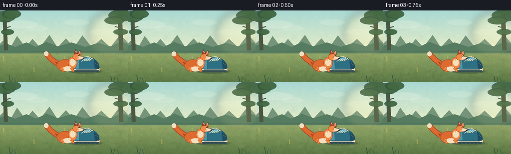
展开代码变化
--- 上一保存版本
+++ 本次保存版本
@@ -222,6 +222,16 @@
def draw_fox(draw, x, ground_y, phase, run_amount, bob):
+ scale = 1.16
+
+ def p(px, py):
+ return (x + (px - x) * scale, ground_y + (py - ground_y) * scale)
+
+ def box(left, top, right, bottom):
+ x1, y1 = p(left, top)
+ x2, y2 = p(right, bottom)
+ return (x1, y1, x2, y2)
+
y = ground_y - 12.0 + bob
orange = color("#dd6a2f")
orange_light = color("#f18a45")
@@ -234,69 +244,85 @@
tail_base = (x - 18, y - 3)
tail_mid = (x - 31, y - 11 + tail_wave)
tail_tip = (x - 41, y - 21 + tail_wave * 1.3)
- line(draw, [tail_base, tail_mid, tail_tip], orange_dark, 11.0)
- line(draw, [tail_base, tail_mid, tail_tip], orange, 8.5)
- ellipse(draw, (tail_tip[0] - 4.4, tail_tip[1] - 5.0,
- tail_tip[0] + 4.4, tail_tip[1] + 4.8), cream)
+ line(draw, [p(*tail_base), p(*tail_mid), p(*tail_tip)],
+ orange_dark, 11.0 * scale)
+ line(draw, [p(*tail_base), p(*tail_mid), p(*tail_tip)],
+ orange, 8.5 * scale)
+ ellipse(draw, box(tail_tip[0] - 4.4, tail_tip[1] - 5.0,
+ tail_tip[0] + 4.4, tail_tip[1] + 4.8), cream)
# Far legs sit behind the body in a darker shade.
far_phase = phase + math.pi
- draw_leg(draw, leg_points(x - 9, y + 9, far_phase, run_amount, False),
+ draw_leg(draw, [p(*q) for q in leg_points(x - 9, y + 9, far_phase,
+ run_amount, False)],
orange_dark, color("#c2552b"))
- draw_leg(draw, leg_points(x + 10, y + 8, far_phase + 0.45, run_amount, False),
+ draw_leg(draw, [p(*q) for q in leg_points(x + 10, y + 8, far_phase + 0.45,
+ run_amount, False)],
orange_dark, color("#c2552b"))
# Body, shoulder and neck.
- ellipse(draw, (x - 20, y - 12, x + 14, y + 12), orange, orange_dark, 0.7)
- ellipse(draw, (x + 3, y - 17, x + 21, y + 7), orange_light, orange_dark, 0.65)
- ellipse(draw, (x - 8, y + 2, x + 12, y + 12), cream)
- ellipse(draw, (x + 6, y - 13, x + 18, y + 1), cream)
+ ellipse(draw, box(x - 20, y - 12, x + 14, y + 12),
+ orange, orange_dark, 0.7)
+ ellipse(draw, box(x + 3, y - 17, x + 21, y + 7),
+ orange_light, orange_dark, 0.65)
+ ellipse(draw, box(x - 8, y + 2, x + 12, y + 12), cream)
+ ellipse(draw, box(x + 6, y - 13, x + 18, y + 1), cream)
# Head with pointed ears and a clean side-profile muzzle.
head_cx, head_cy = x + 20, y - 17
- ellipse(draw, (head_cx - 8, head_cy - 7, head_cx + 9, head_cy + 7),
+ ellipse(draw, box(head_cx - 8, head_cy - 7, head_cx + 9, head_cy + 7),
orange_light, orange_dark, 0.65)
ear_back = [(head_cx - 5, head_cy - 5), (head_cx - 2, head_cy - 15),
(head_cx + 3, head_cy - 6)]
ear_front = [(head_cx + 2, head_cy - 6), (head_cx + 7, head_cy - 14),
(head_cx + 9, head_cy - 4)]
- rounded_polygon(draw, ear_back, orange_dark, ink, 0.55)
- rounded_polygon(draw, ear_front, orange_light, ink, 0.55)
- rounded_polygon(draw, [(head_cx - 3, head_cy - 10), (head_cx - 1, head_cy - 13),
- (head_cx + 1, head_cy - 8)], color("#df9b8d"))
- rounded_polygon(draw, [(head_cx + 4, head_cy - 10), (head_cx + 7, head_cy - 12),
- (head_cx + 7, head_cy - 7)], color("#df9b8d"))
+ rounded_polygon(draw, [p(*q) for q in ear_back], orange_dark, ink, 0.55)
+ rounded_polygon(draw, [p(*q) for q in ear_front], orange_light, ink, 0.55)
+ rounded_polygon(draw, [p(head_cx - 3, head_cy - 10),
+ p(head_cx - 1, head_cy - 13),
+ p(head_cx + 1, head_cy - 8)], color("#df9b8d"))
+ rounded_polygon(draw, [p(head_cx + 4, head_cy - 10),
+ p(head_cx + 7, head_cy - 12),
+ p(head_cx + 7, head_cy - 7)], color("#df9b8d"))
muzzle = [(head_cx + 3, head_cy - 2), (head_cx + 13, head_cy),
(head_cx + 15, head_cy + 4), (head_cx + 4, head_cy + 6)]
- rounded_polygon(draw, muzzle, cream, orange_dark, 0.5)
- ellipse(draw, (head_cx + 12.0, head_cy + 2.1,
- head_cx + 15.2, head_cy + 4.3), ink)
- line(draw, [(head_cx + 12.5, head_cy + 5), (head_cx + 9, head_cy + 6.5)],
+ rounded_polygon(draw, [p(*q) for q in muzzle], cream, orange_dark, 0.5)
+ ellipse(draw, box(head_cx + 12.0, head_cy + 2.1,
+ head_cx + 15.2, head_cy + 4.3), ink)
+ line(draw, [p(head_cx + 12.5, head_cy + 5),
+ p(head_cx + 9, head_cy + 6.5)],
ink, 0.6)
# Eye, brow, cheek, whisker dots and neck ruff.
- ellipse(draw, (head_cx + 3.7, head_cy - 4.4, head_cx + 7.0, head_cy - 1.2), ink)
- ellipse(draw, (head_cx + 4.8, head_cy - 3.8, head_cx + 5.8, head_cy - 2.7),
+ ellipse(draw, box(head_cx + 3.7, head_cy - 4.4,
+ head_cx + 7.0, head_cy - 1.2), ink)
+ ellipse(draw, box(head_cx + 4.8, head_cy - 3.8,
+ head_cx + 5.8, head_cy - 2.7),
(255, 247, 218))
- line(draw, [(head_cx + 2.5, head_cy - 6.3), (head_cx + 6.8, head_cy - 5.7)],
+ line(draw, [p(head_cx + 2.5, head_cy - 6.3),
+ p(head_cx + 6.8, head_cy - 5.7)],
orange_dark, 0.65)
- ellipse(draw, (head_cx + 1.0, head_cy + 2.5, head_cx + 5.0, head_cy + 5.2),
+ ellipse(draw, box(head_cx + 1.0, head_cy + 2.5,
+ head_cx + 5.0, head_cy + 5.2),
(244, 190, 125))
for dx, dy in [(11, 2.6), (10, 4.2), (9, 5.5)]:
- ellipse(draw, (head_cx + dx, head_cy + dy,
- head_cx + dx + 0.5, head_cy + dy + 0.5), orange_dark)
+ ellipse(draw, box(head_cx + dx, head_cy + dy,
+ head_cx + dx + 0.5, head_cy + dy + 0.5), orange_dark)
# Near legs and paws.
- draw_leg(draw, leg_points(x - 12, y + 9, phase + 0.18, run_amount, True),
+ draw_leg(draw, [p(*q) for q in leg_points(x - 12, y + 9, phase + 0.18,
+ run_amount, True)],
orange, orange_light)
- draw_leg(draw, leg_points(x + 8, y + 8, phase + math.pi + 0.25,
- run_amount, True), orange, orange_light)
+ draw_leg(draw, [p(*q) for q in leg_points(x + 8, y + 8,
+ phase + math.pi + 0.25,
+ run_amount, True)],
+ orange, orange_light)
# A few tufts make the silhouette read as a fox rather than a generic dog.
- line(draw, [(x - 17, y - 4), (x - 23, y - 7), (x - 19, y - 2)],
+ line(draw, [p(x - 17, y - 4), p(x - 23, y - 7), p(x - 19, y - 2)],
orange_dark, 1.3)
- line(draw, [(x + 5, y - 12), (x + 10, y - 16), (x + 11, y - 10)],
+ line(draw, [p(x + 5, y - 12), p(x + 10, y - 16), p(x + 11, y - 10)],
orange_light, 1.0)
@@ -322,7 +348,7 @@
idle_phase = index * 0.55
run = smoothstep(4.2, 6.5, index)
travel = smoothstep(4.4, 18.0, index)
- fox_x = 133.5 + 69.0 * travel
+ fox_x = 140.5 + 59.0 * travel
run_phase = (index - 4.2) * 1.52
bob = (math.sin(run_phase * 2.0) * 1.25 - 0.8) * run
if index < 4:
候选 03播放与检查图
点击播放 · 原生 RGB 像素

展开代码变化
代码未变化；重新保存了产物。
候选 04播放与检查图
点击播放 · 原生 RGB 像素

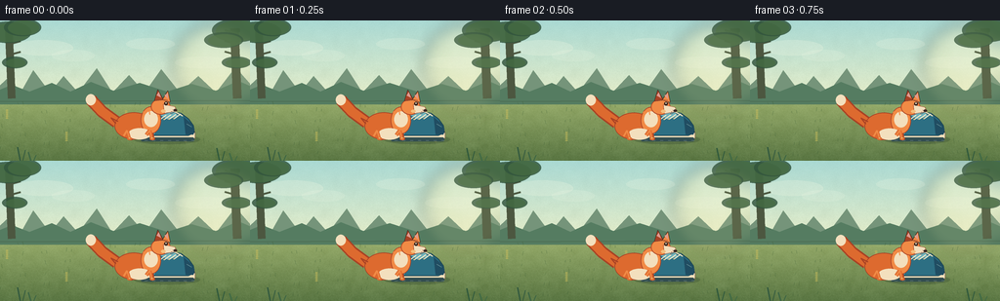
展开代码变化
--- 上一保存版本
+++ 本次保存版本
@@ -242,12 +242,12 @@
# Tail follows the body with a one-frame lag in its wave.
tail_wave = math.sin(phase - 0.8) * (2.2 + 3.0 * run_amount)
tail_base = (x - 18, y - 3)
- tail_mid = (x - 31, y - 11 + tail_wave)
- tail_tip = (x - 41, y - 21 + tail_wave * 1.3)
+ tail_mid = (x - 32, y - 5 + tail_wave * 0.6)
+ tail_tip = (x - 44, y - 11 + tail_wave)
line(draw, [p(*tail_base), p(*tail_mid), p(*tail_tip)],
- orange_dark, 11.0 * scale)
+ orange_dark, 10.0 * scale)
line(draw, [p(*tail_base), p(*tail_mid), p(*tail_tip)],
- orange, 8.5 * scale)
+ orange, 7.5 * scale)
ellipse(draw, box(tail_tip[0] - 4.4, tail_tip[1] - 5.0,
tail_tip[0] + 4.4, tail_tip[1] + 4.8), cream)
@@ -342,7 +342,10 @@
frame = BACKGROUND.copy()
draw = ImageDraw.Draw(frame, "RGBA")
- draw_shoe(draw)
+ shoe = Image.new("RGBA", frame.size, (0, 0, 0, 0))
+ draw_shoe(ImageDraw.Draw(shoe, "RGBA"))
+ frame.paste(shoe, (-18, 0), shoe)
+ draw = ImageDraw.Draw(frame, "RGBA")
# The first beat is an attentive, nearly still fox in front of the shoe.
idle_phase = index * 0.55
候选 05播放与检查图

候选 06播放与检查图
点击播放 · 原生 RGB 像素
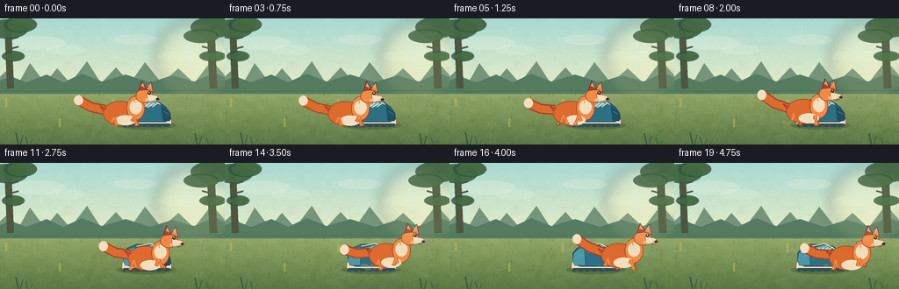
展开代码变化
--- 上一保存版本
+++ 本次保存版本
@@ -344,14 +344,14 @@
shoe = Image.new("RGBA", frame.size, (0, 0, 0, 0))
draw_shoe(ImageDraw.Draw(shoe, "RGBA"))
- frame.paste(shoe, (-18, 0), shoe)
+ frame.paste(shoe, (-44, 0), shoe)
draw = ImageDraw.Draw(frame, "RGBA")
# The first beat is an attentive, nearly still fox in front of the shoe.
idle_phase = index * 0.55
run = smoothstep(4.2, 6.5, index)
travel = smoothstep(4.4, 18.0, index)
- fox_x = 140.5 + 59.0 * travel
+ fox_x = 140.5 + 64.0 * travel
run_phase = (index - 4.2) * 1.52
bob = (math.sin(run_phase * 2.0) * 1.25 - 0.8) * run
if index < 4:
候选 07播放与检查图

可观测工具轨迹
实际执行的命令与返回图片。
命令 1exit 0
/bin/bash -c "pwd && rg --files -g '"'!*__pycache__*'"' | sed -n '1,200p'"
命令 2exit 0
/bin/bash -c "sed -n '1,240p' GENERATION_RULES.md"
命令 3exit 0
/bin/bash -c "cat task_spec.json && printf '\\n---PROMPT---\\n' && cat prompt.txt"
命令 4exit 0
/bin/bash -c "sed -n '1,260p' artifact_io.py"
命令 5exit 0
/bin/bash -c "sed -n '1,260p' player_template.html"
命令 6exit 0
/bin/bash -c "find . -maxdepth 2 -type f -printf '%p %s bytes\\n' | sort && python - <<'PY' import importlib.util for m in ['PIL','numpy','imageio','cv2']: print(m, bool(importlib.util.find_spec(m))) PY"
命令 7exit 0
/bin/bash -c 'python generate.py'
命令 8exit 0
/bin/bash -c "python - <<'PY'
from PIL import Image
for i in [0, 9, 19]:
im=Image.open(f'frames/{i:02d}.png')
im.resize((1024,576), Image.Resampling.NEAREST).save(f'.tmp/frame_{i:02d}_x4.png')
PY"命令 9exit 0
/bin/bash -c 'cp inspection.png .tmp/candidate_01_inspection.png && cp pixels.npz .tmp/candidate_01_pixels.npz'
命令 10exit 0
/bin/bash -c 'python generate.py'
命令 11exit 0
/bin/bash -c 'python generate.py'
命令 12exit 0
/bin/bash -c 'python generate.py'
命令 13exit 0
/bin/bash -c "python - <<'PY'
from PIL import Image
for i in [0, 4, 9, 14, 19]:
Image.open(f'frames/{i:02d}.png').resize((1024,576), Image.Resampling.NEAREST).save(f'.tmp/final_{i:02d}_x4.png')
PY
python - <<'PY'
from pathlib import Path
import json
import numpy as np
from PIL import Image
spec=json.loads(Path('task_spec.json').read_text())
a=np.load('pixels.npz')['pixels']
assert a.shape == (spec['height'], spec['width'], spec['frames'])
assert len(list(Path('frames').glob('*.png'))) == spec['frames']
for p in sorted(Path('frames').glob('*.png')):
im=Image.open(p)
assert im.size == (spec['width'], spec['height']) and im.mode == 'RGB'
assert Path('index.html').stat().st_size > 100000
print('artifact OK', a.shape, a.dtype, 'pngs=20', 'index_bytes=', Path('index.html').stat().st_size)
PY"命令 14exit 0
/bin/bash -c "python - <<'PY'
import json, re
from pathlib import Path
s=Path('index.html').read_text()
assert 'const DATA=' in s and 'window.__pixelReady=true' in s
assert 'A fox is in front of a shoe' in s
print('player payload OK:', len(s), 'bytes')
PY
git status --short 2>/dev/null || true"视觉工具实际返回图片 1
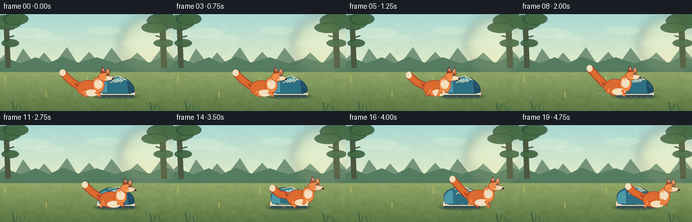
视觉工具实际返回图片 2
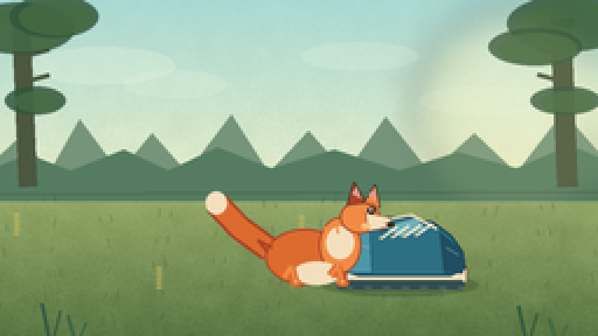
视觉工具实际返回图片 3
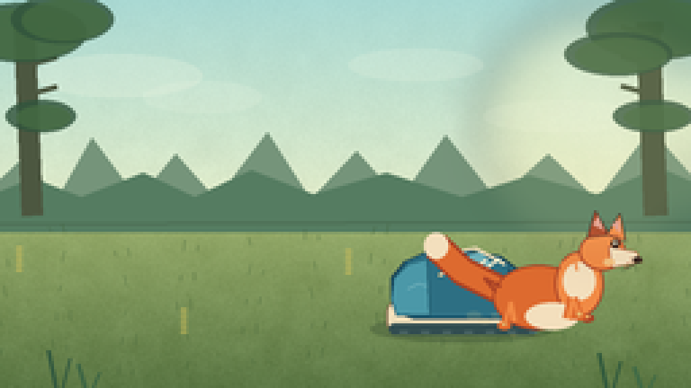
视觉工具实际返回图片 4
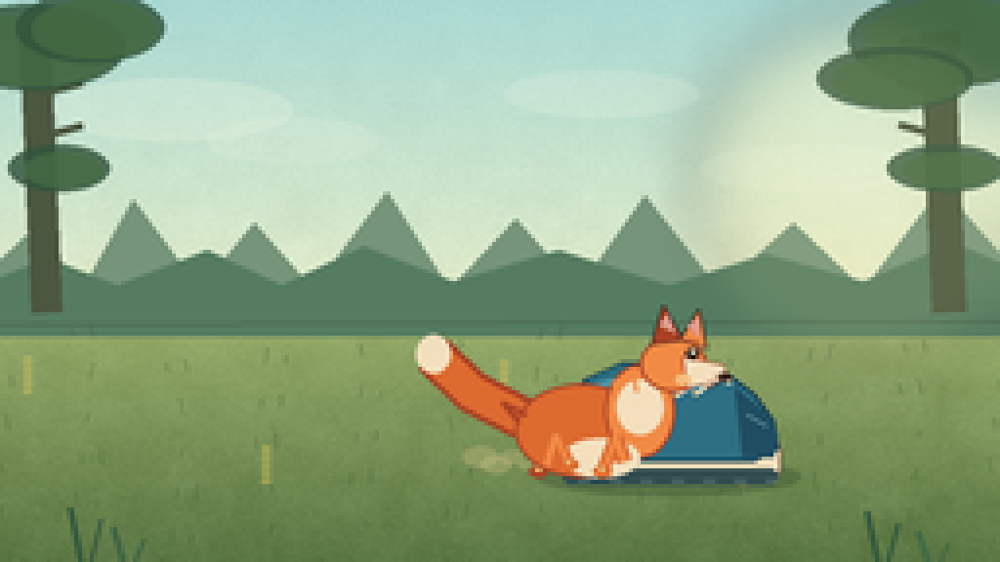
视觉工具实际返回图片 5
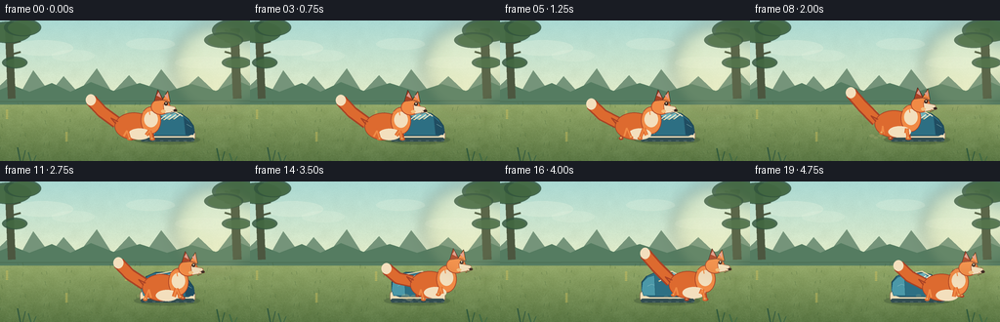
视觉工具实际返回图片 6

视觉工具实际返回图片 7
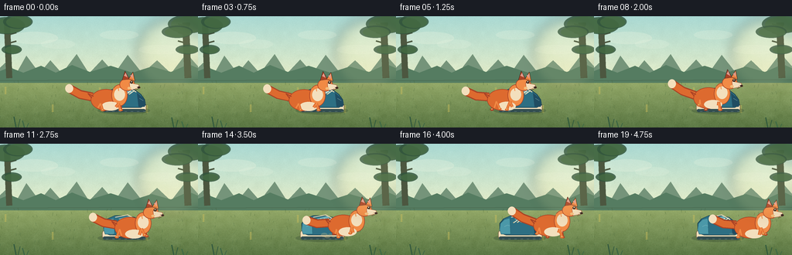
视觉工具实际返回图片 8
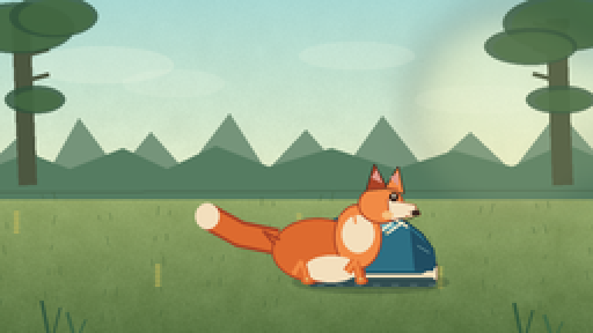
视觉工具实际返回图片 9
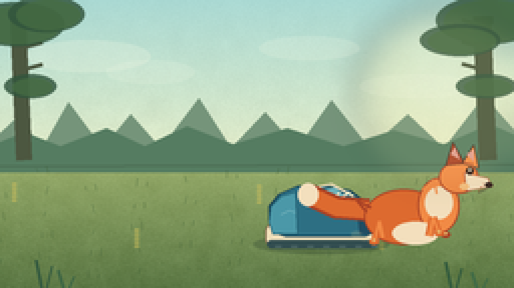
保存候选 7 份；完成命令 14 次；可验证图片返回 9 张。原始 API 响应与完整日志保留在本地。